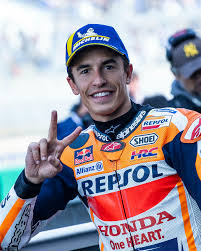

Le Championnat du Monde MotoGP
Le MotoGP est la catégorie reine du championnat du monde de motocyclisme. Découvrez Marc Márquez, un des pilotes les plus célèbres de cette compétition.
Les Dernières Courses
Marc Márquez et d'autres pilotes participent aux courses les plus excitantes de la saison.